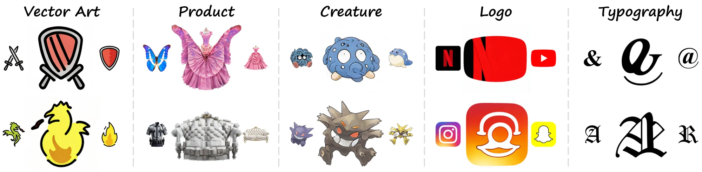
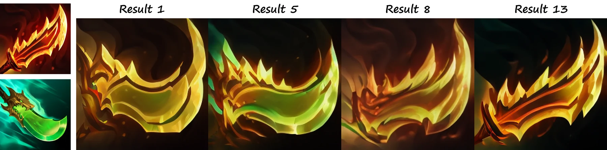
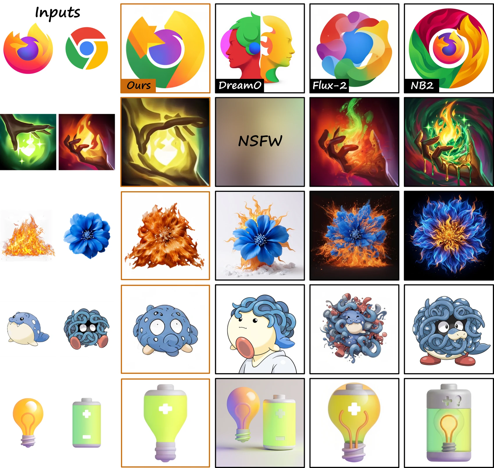
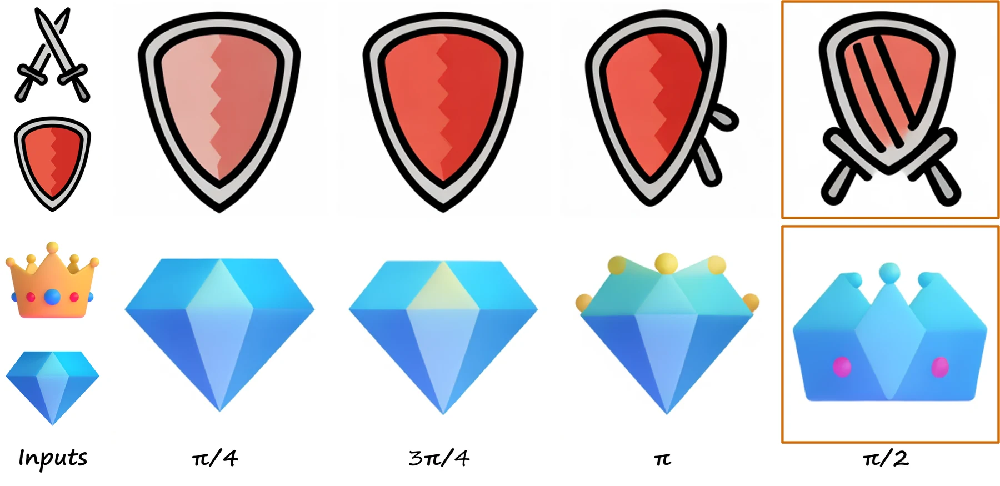

Convention-Aware Creative Synthesis
via Diffusion for Design Domains
SIGGRAPH Asia 2026, Technical Communications Kuala Lumpur · 1–4 December 2026
Chung-Ang University, South Korea
*Now with Smilegate AI


- < 1 minper-pair fine-tuning
- 10 GBpeak VRAM · 1× RTX 3090
- 60 itersLoRA, rank 12
- 5 domainsvector art → typography
- Top - 1in a 50-response study
Abstract
Recent generative models produce visually fascinating outcomes but often fail to preserve design conventions such as rendering style, structure, or branding. We propose ConvArt, a convention-aware tool that implicitly synthesizes novel designs by blending two inputs while adhering to their established drawing conventions. Since each input pair carries its own visual heritage, an orthogonal tuning scheme specializes a pre-trained diffusion model to each pair by conditioning on 3D spherical coordinates, requiring only one minute and 10 GB of VRAM on a consumer GPU. Users can then explore multiple outcomes for human-in-the-loop design exploration. Across vector art, product, creature, logo, and typography, a user study with 50 responses preferred ConvArt over strong baselines, including state-of-the-art commercial models.
- Creative Synthesis
- Diffusion Models
- Design Convention
- LoRA Fine-tuning
- Generative Design
Contributions
- Creative Synthesis. A task that implicitly fuses two inputs into a convention-preserving design, contrasting prior explicit, attribute-driven approaches.
- Lightweight. An orthogonal tuning scheme conditions the diffusion model on 3D spherical coordinates, enabling fast fine-tuning within one minute on a consumer GPU.
- Preferred. In a 50-response user study, ConvArt was selected as the top-1 choice over strong commercial baselines.
Method
From novel views to novel designs
Prior work uses pose conditioning to render a single 3D object from a new viewpoint. We find the same machinery can be repurposed to control the fusion of two 2D visual concepts. By decoupling the two inputs inside the conditioning space, we avoid the destructive interference that plagues naive interpolation.
Explicit synthesis
Composition and virtual try-on insert a specified element at a specified region; concept-learning methods personalize a single subject into new contexts. Either way, what comes from where is enumerated up front.
Implicit synthesis
ConvArt fuses two distinct designs without enumerating which element comes from where—the way a designer blends inspirations—while preserving rendering style, dominant palette and the domain’s own conventions.
3.1Orthogonal spherical conditioning
Each input is embedded with a CLIP image encoder and a spherical configuration (θ, φ, r), following Zero123's convention φ ↦ [sin(φ), cos(φ)]. A relative pose offset δ assigns the two samples to orthogonal directions of the conditioning space, so the features of one input do not overwrite the other. The condition weight v linearly interpolates the spherical parameters between them.
c_v = MLP([ E_CLIP(x_v), lerp(θ₁,θ₂,v),
sin(lerp(φ₁,φ₂,v)), cos(lerp(φ₁,φ₂,v)),
lerp(r₁,r₂,v) ])3.2Per-instance fine-tuning
Because every pair carries its own visual heritage, ConvArt specializes the model per pair. LoRA modules are injected into the attention layers and optimized with the ε-prediction objective while v is sampled from {0, 1} during training—binding each visual feature to its own orthogonal axis and preventing feature leakage at inference.
L(Δφ, x, c) = E[ ‖ ε − ε_(φ+Δφ)(z_t; t, c_v) ‖²₂ ]3.3Inference & exploration
Sampling uses classifier-free guidance (ω = 3.0) with DDIM (T = 50, η = 1.0). Once tuned, the user simply drags v to traverse the blend manifold and curate the candidate that matches their design intent—rather than relying on a single deterministic output.
ε̂_v = ε_φ(ẑ_t,t,∅) + ω·( ε_(φ+Δφ)(ẑ_t,t,c_v) − ε_φ(ẑ_t,t,∅) )Candidates
One model, a family of designs
Fine-tuning is per pair, but the result is not a single image: sweeping the condition weight v traverses the blend manifold and yields a whole family of candidates from the same pair. The designer curates the one that matches their intent—the human-in-the-loop step that makes the method usable in practice.

Gallery
Results across design domains
Each result is produced by a model tuned on that pair alone. Notice that the output keeps the rendering convention of its domain—flat vector strokes stay flat, 3D shading stays glossy, letterforms stay type. The five domains were curated with LLM-assisted selection and manual gathering of stylistically and structurally varied samples, all resized to 256 × 256.
Comparison
Fusion, not insertion
Against a personalization/editing baseline (DreamO) and two large-scale commercial models (FLUX.2 dev, Nano Banana 2). Instruction-based baselines receive both images plus a text prompt describing the intended hybrid, for an equivalent input condition.

Ablation
Why orthogonal?
We vary only the fine-tuning pose offset δ and keep everything else fixed. Near-parallel offsets (π/4, 3π/4) collapse toward one input; the antipodal offset (π) yields a disjointed composition with motifs floating as separate elements. Only δ = π/2 consistently produces a coherent, unified hybrid.

| δ | π/4 | 3π/4 | π | π/2 ours |
|---|---|---|---|---|
| Mean s̄ ↑ | 0.801 | 0.832 | 0.808 | 0.861 |
| Imbalance |s₁−s₂| ↓ | 0.193 | 0.213 | 0.171 | 0.083 |
Study
Preferred on every criterion
50 responses from undergraduate and graduate students majoring in art, design, computer graphics or content engineering. Participants picked their top-1 output on three criteria: impression (is it idea-provoking?), fidelity (texture, painting style and structural integrity), and tolerance (is it usable as a reference in a real design workflow?).
Top-1 selection percentage
Video
Limitations & future work
Over-detailing
The model sometimes elaborates textures into unnecessary clutter, adding detail the source conventions never had.
Precision-critical domains
Preserving exact structural fidelity remains hard for typography and logo design; our implicit fusion best suits domains that tolerate stylistic variation.
What's next
Adaptive angle selection conditioned on the input pair, extension to three or more inputs, structure-aware conditioning for precision-critical domains, and a comparison against independently learned condition embeddings for each input.
Citation
@inproceedings{kim2026convart,
title = {Convention-Aware Creative Synthesis via Diffusion for Design Domains},
author = {Kim, Bumsoo and Seo, Sanghyun},
booktitle = {SIGGRAPH Asia 2026 Technical Communications (SA '26)},
year = {2026},
location = {Kuala Lumpur, Malaysia},
publisher = {Association for Computing Machinery},
address = {New York, NY, USA},
numpages = {4},
doi = {10.1145/3829339.3847844},
url = {https://doi.org/10.1145/3829339.3847844}
}More research from Bumsoo Kim
First-author work only